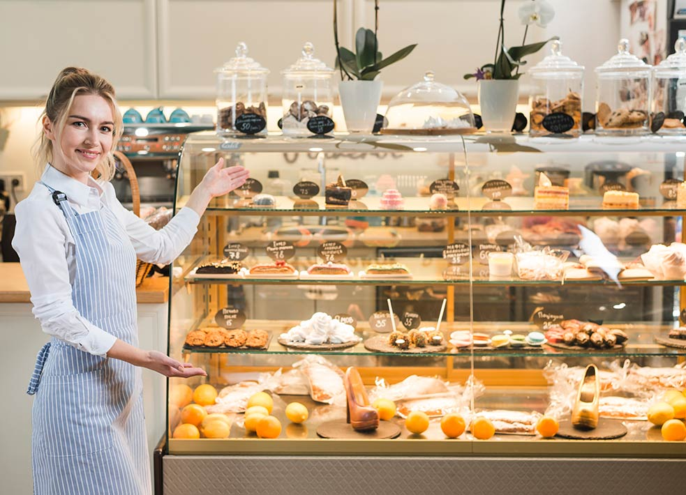

¿QUIÉNES SOMOS?

Somos un negocio familiar con más de 20 años de experiencia en el mundo del sabor,
que ha evolucionado hasta nuestros días respetando la esencia de las ancestrales recetas
de repostería y panadería hasta acomodarse al nuevo paladar de un consumidor cada vez
más exigente que demanda productos de una gran calidad y un servicio rápido adaptado
al ritmo trepidante de la ciudad.
Toda la esencia de un pequeño obrador en el que se elaboran con recelo dulces tradicionales
unido a nuevos conceptos de pastelería, todo ello con materias primas de máxima calidad.
Tradición, modernidad, calidad, variedad y rapidez en el servicio son los ingredientes para
él éxito.
Entre los rasgos diferenciales de Pasteles Artesanales, además de la mencionada calidad y
variedad de los productos que ofrece, habría que destacar la cercanía; el hecho de ser una
empresa familiar con más de 20 años de experiencia, le confiere un plus de confianza, y la
relación especial que se ha creado entre el cliente y el obrador a lo largo de los más de 20
años de trabajo en el sector: la elaboración propia permite un trato muy personalizado en
cada uno de sus productos adaptándolos en la medida de lo posible al gusto del cliente y en
la experiencia acumulada.
Los productos de Pasteles Artesanales se distinguen por su variedad y calidad: desde tartas de distintos sabores y texturas (chocolate, nata, merengue, turrón, con frutas, mousses...), incluso personalizadas al gusto del consumidor, a bombones artesanos, así́ como productos de panadería,cafetería, repostería.